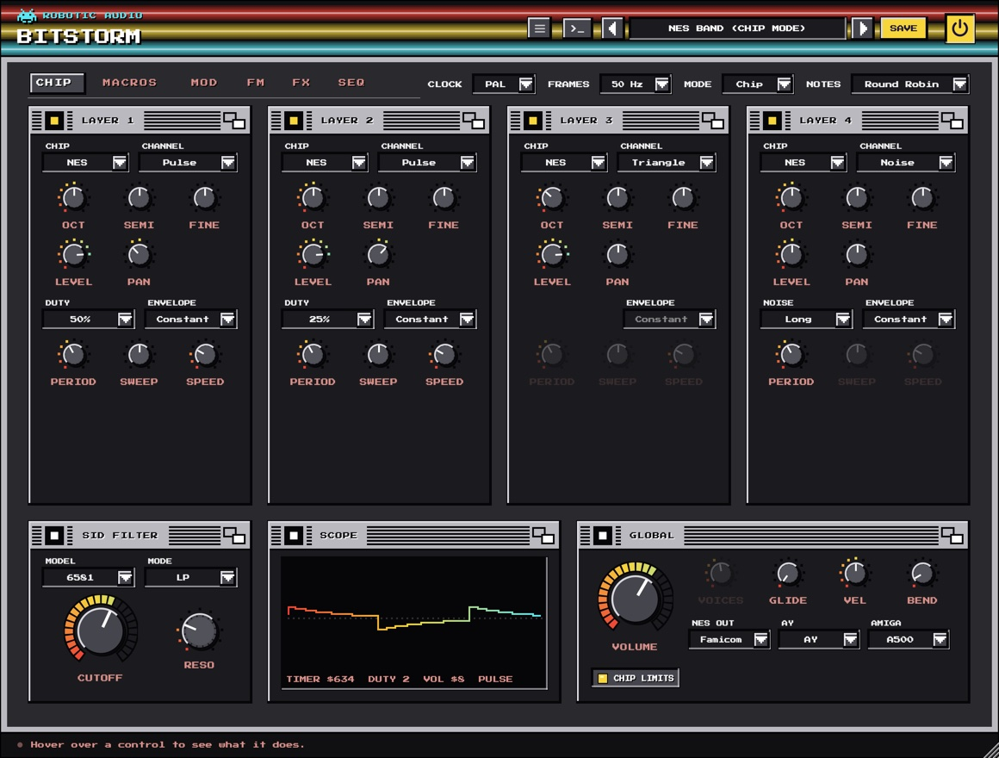
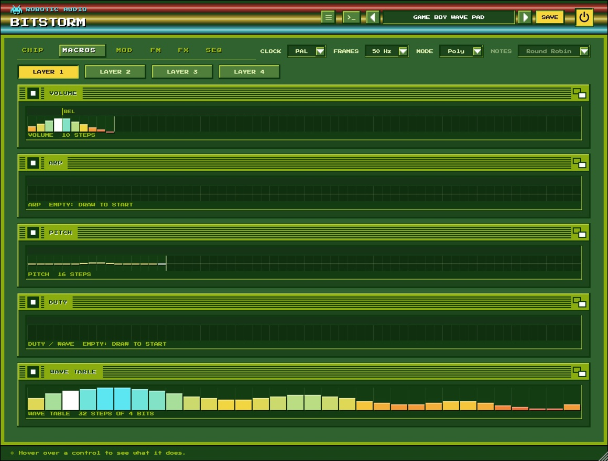
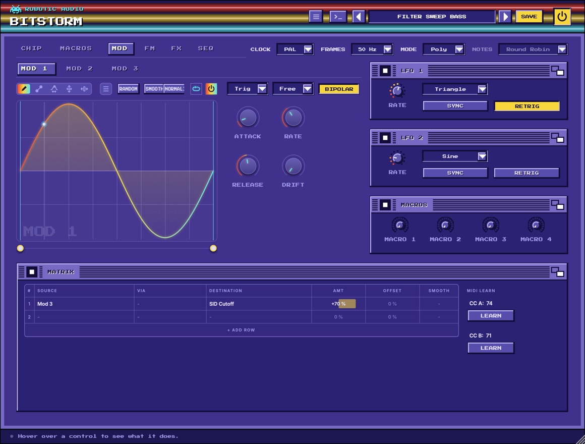
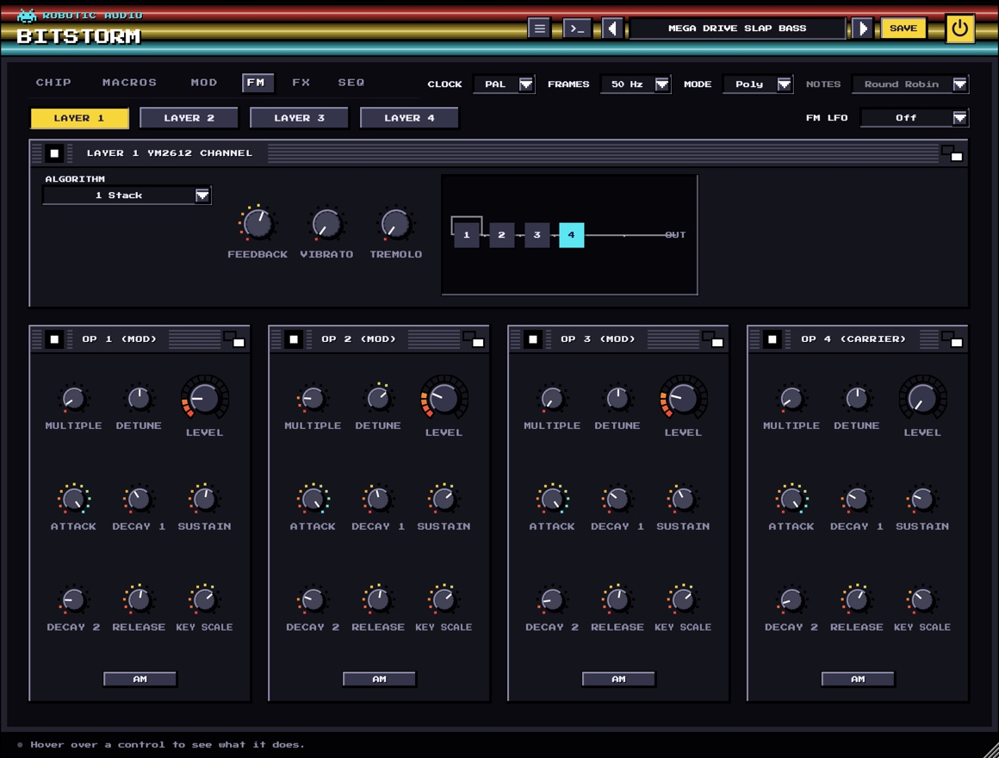
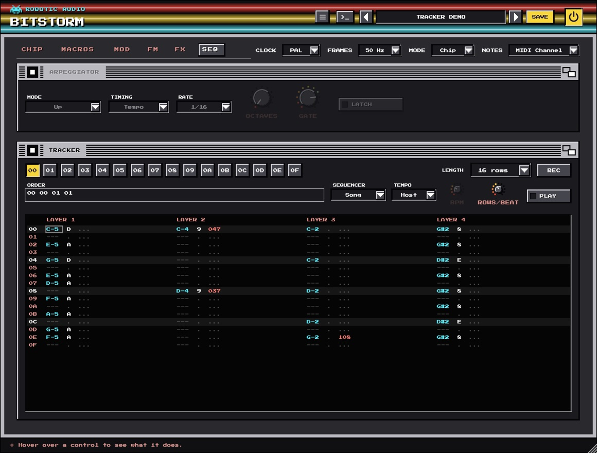

Bitstorm
A chip synth with seven sound chips inside: the C64, the NES, the Game Boy, the Spectrum, the Atari, the Amiga and the Mega Drive, computed the way the hardware did it. Stack four of them on every note, or play one chip channel by channel, with tracker macros, an arpeggiator and a tracker of its own.
- 7 chips: SID, NES, Game Boy, AY, POKEY, Paula, YM2612
- 4 layers per note, up to 16 voices
- Chip mode: a channel per layer
- Tracker macros per layer
- 3 drawn envelopes, 2 LFOs, 16-slot matrix
- Arpeggiator and a 16-pattern tracker
- 4 effect slots
- AU · VST3 · Standalone

Quick start
From install to the first bleep.
Load a preset
Use the arrows or the list in the header. C64 Sync Lead, NES Triangle Bass, Game Boy Wave Pad and Mega Drive Slap Bass show four of the machines.
Pick a chip
On the CHIP page, each layer's card starts with its chip menu. Change layer 1's and the whole window changes colour with it.
Shape it per frame
On MACROS, draw layer 1's Volume and Arp macros: a looped 0 4 7 on Arp is the classic chip chord.
Play the hardware way
Set Mode to Chip: the four layers become one chip's channels, each playing a note of its own.
Write a tune
On SEQ, set the Sequencer to Song, fill a pattern and press PLAY (or play your DAW).
Save
Press SAVE in the header. Your preset keeps every setting, macro, wave and song.
The window
A header, a row of settings beside the page tabs, and six pages.
- Header
- The preset bar (previous, next, the list, SAVE), the power button (bypass) and the menu (three lines) with this manual. Click the title for version and credits. With an AI key, a >_ beside the preset bar opens the designer. Until Bitstorm is licensed, a DEMO or TRIAL chip beside the menu opens the licence.
- Beside the tabs
- Clock, Frames, Mode and Notes: the machine every page plays on (see global and modes).
- CHIP
- The four layers, the SID filter, the scope and the global settings.
- MACROS
- Each layer's tracker macros: Volume, Arp, Pitch and the chip's own fourth (and the Game Boy's wave table).
- MOD
- Three drawn envelopes, two LFOs, four macro knobs and the matrix.
- FM
- The YM2612's four operators for the layer chosen above them.
- FX
- Four effect slots after the chips, and the selected effect's editor.
- SEQ
- The arpeggiator and the tracker.
The window can be resized from its bottom-right corner. Its palette follows layer 1's chip: C64 blue for the SID, NES grey, Game Boy green, Spectrum black for the AY, Atari blue for the POKEY, Workbench blue for Paula and an arcade cabinet for the YM2612.
Using the controls
| Do this | To |
|---|---|
| Drag a knob up or down | change it (the value shows while you touch it) |
| Cmd / Ctrl / Alt + drag | fine adjustment |
| Double-click a knob | reset it to its default |
| Right-click a knob the matrix can move | route a modulation source to it |
| Drag across a macro or the wave table | draw it |
A knob that something modulates shows a ring around it: the range the modulation can take it over, and a dot where it is right now.
Signal flow
What happens to a note.
Each layer is one channel of a chip, run at twice the sample rate with its steps band-limited and brought down cleanly, so the sound is the chip's and not the aliasing of a naive copy. The macros step at the machine's frame rate. The layers then pass through the machine's own output stages (the SID filter for layers routed to it, the NES and Amiga output filters) and the four effect slots.
Poly and Chip mode
Four layers on every note, or one chip played channel by channel.
- Mode Poly
- Every note stacks the four layers (the ones switched on), as one thick sound. Voices sets how many notes play at once, up to 16; at 1 it is mono, with legato and Glide.
- Mode Chip
- One voice, as the hardware played: each layer is a channel of the chip and takes a note of its own. Notes decides how a note finds its channel: Round Robin hands each new note to the next free layer; MIDI Channel plays MIDI channel 1 on layer 1, 2 on layer 2 and so on, one part per channel, as a tracker does.
Layers
Four cards on the CHIP page, each a chip channel.
Each layer's card has its power square (layer 1 starts on, the others off), its chip menu, the chip's own controls (see the chips), and the controls every layer has:
- Oct · Semi · Fine
- The layer's tuning: −3 to +3 octaves, −12 to +12 semitones, ±100 cents.
- Level · Pan
- How loud the layer is (0–100 %) and where it sits between the speakers.
- Sync · Ring · Filter
- On a SID layer: hard sync to the layer before it, ring modulation by it, and the route through the SID filter (see below).
Layer 2 syncs to and ring-modulates with layer 1, layer 3 with layer 2, and so on, as the C64's three voices are chained. Turning on Chip Limits (on the global card) keeps every value on the chip's real steps.
The chips
Seven machines, each computed from how the chip worked.
Wave: triangle, saw, pulse, noise, and the combined waves (the bits of two or three ANDed: thin and metallic). The pulse's PW in its 12 bits, PWM and Rate for the classic moving pulse. The SID's own ADSR (Attack, Decay, Sustain, Release, 0–15) with its real rates and steps. Sync, Ring and Filter link it to the other layers.
Channel: a pulse (Duty 12.5, 25, 50 or 75 %), the 4-bit triangle (no volume, only on or off) or the noise (Long hiss or Short, a metallic buzz). The console's Envelope (Constant, Decay or Loop) with its Period, and the pulse's Sweep and Speed, which bend the pitch by themselves.
Channel: a pulse, the wave channel (32 steps you draw on MACROS) or the 15- and 7-bit noise. The volume envelope's Start, Period and Rise; the pulse's Sweep and Speed; the wave channel's Volume (100, 50 or 25 %).
Mixer: tone, noise, both ANDed (gritty, broken) or None (the envelope alone). Noise sets its period. The hardware Envelope in eight shapes, run at the note's own pitch as the famous Buzzer bass, or Free at Env Rate.
Distortion: what the polynomial counters do to the tone: Pure (a square), Buzz, Buzz 5, Square 5 and three noises. Resolution: 16-bit plays in tune everywhere; the 8-bit ones are the POKEY's rough, out-of-tune scale (some go silent with the 5-bit poly, as on the chip).
Eight-bit Samples at the Amiga's period rates: Protracker's tiny looped waves (Saw, Square, Pulse 25, Triangle, Sine, Organ, Chip Choir, Hollow), a kick, snare and hat, or File: LOAD (or drop) a sound of your own, made 8-bit at C-3's rate. Loop sustains a file by looping its second half.
Four FM operators in eight Algorithms, operator 1's Feedback, Vibrato and Tremolo from the chip's LFO, and the 9-bit DAC's grit. Its operators have a page of their own: FM.
Filter, scope and global
The bottom row of the CHIP page, and the settings beside the tabs.
SID filter
- Model
- The SID's two versions: the 6581 (the first C64s: dirty and dark, its cutoff curved and its resonance strong) or the 8580 (clean and bright).
- Mode
- The filter's outputs, alone or mixed: LP, BP, HP, LP+BP, BP+HP, Notch or All.
- Cutoff · Reso
- The 11-bit cutoff register (0–2047; the 6581's curve is uneven, as the chips were) and the resonance, 0–15. Only SID layers with Filter lit go through it.
Scope
The sound as it plays, with the chip's registers in hexadecimal beside it: what the hardware would have been told, frame by frame.
Global
- Volume
- Bitstorm's output level.
- Voices · Glide
- How many notes play at once in Poly (1 is mono, with legato), and in mono how long a legato note slides to its pitch.
- Vel · Bend
- How much the keys' velocity sets the volume (the chips had none), and the pitch wheel's range in semitones.
- NES Out
- The console's output filters: NES (thin, two high passes), Famicom (fuller) or Clean.
- AY
- The AY-3-8910 (16 volume steps) or Yamaha's YM2149 (32 envelope steps, smoother).
- Amiga
- Paula's output stage: the A500's fixed low pass, LED (the filter its power light switched, a soft 12 dB low pass), or the A1200's, without either.
- Chip Limits
- Keeps every value to the chip's own steps: pitches on its timers (the NES goes out of tune up high), volumes in 16 steps, the pulse width in 12 bits.
- Clock · Frames
- PAL (European) or NTSC (American) clock, which tunes the chips' pitch steps, and the rate macros and envelopes step at: 50 or 60 Hz.
Macros
The tracker's way of shaping a note: a step per frame.

Choose a layer with the LAYER buttons. Each macro is a row of steps the note plays through, one per frame (50 or 60 a second):
- Volume
- The level, 0–15 per frame: the note's envelope.
- Arp
- Semitones added per frame: a looped 0 4 7 is the chip chord, 0 12 an octave flutter.
- Pitch
- A pitch bend per frame: drops for drums, wobbles for vibrato.
- The fourth
- Whatever the chip chooses between, named after it: the SID's Wave, the NES's and Game Boy's Duty, the AY's Mixer, the POKEY's Distortion, Paula's Sample or the YM2612's Algorithm. A noise frame then a falling pitch is a chip drum.
- Wave Table
- On a Game Boy layer: the wave RAM, 32 steps of 4 bits the wave channel plays over and over.
Drag to draw, past the end to make it longer. Click the strip along the top to loop from a step; Shift-click it for the release point, where the note goes when you let go. Right-click for the rest: loop or release from here, no loop, no release. A marker runs along each macro while it plays.
Modulation
Drawn envelopes, LFOs and MIDI, routed by a matrix.

- Mod 1 · 2 · 3
- Drawn envelopes, one per note, each with its power switch: draw the shape, loop a part of it, and set Attack, Release, Rate and Drift; BIPOLAR lets it swing both ways from the middle. Trigger restarts it with every note (Trig), only after a gap (Legato) or follows the song (Tempo); Sync locks its length to note values. Mod 1 starts bipolar, for pitch-like sweeps.
- LFO 1 · 2
- Shape (sine, triangle, saw, square or random), Rate in Hz or, with SYNC, a Note value at the song's tempo. RETRIG starts it afresh with every note; off, every voice shares one free-running LFO.
- Macros
- Four knobs to route, automate and play: right-click one to rename it.
- Matrix
- Sixteen rows, each a source (Mod 1–3, the LFOs, velocity, note, mod wheel, aftertouch, pitch bend, two learnable CCs, a random value per note, the macros), an optional via, a destination, an Amt, an Offset (added even without a source) and a Smooth glide; + ADD ROW shows another, right-click a row to insert, remove or clear it. LEARN beside it teaches CC A and CC B the next controller you move. Destinations are each layer's Pitch (up to ±24 semitones), Level, Pan, Pulse Width and FM Brightness, the SID Cutoff and Resonance, and the Volume.
Right-click a knob the matrix reaches (a layer's Level, Pan or PW, the SID filter, the Volume) to route a source to it straight away. Drawing an envelope works as in every Robotic Audio plugin: tools to draw, draw lines and curves, warp, lift and move; Shift-drag for an edit region; right-click for waveforms, windows and ready-made shapes; Cmd Z undoes.
FM
The YM2612's four operators, for one layer at a time.

Pick the layer with the LAYER buttons (a layer's OPERATORS button on the CHIP page brings you here too). Algorithm connects the four operators, from 1 (one long stack) to 8 (four plain sines); Feedback lets operator 1 modulate itself, from a pure sine through a buzz to noise. Each operator has:
- Multiple · Detune
- Its frequency as a multiple of the note's (0 is a half; whole numbers keep it harmonic), and a few cents up or down to shimmer against the others.
- Level
- Its Total Level in 0.75 dB steps: on a modulator how bright, on a carrier how loud.
- Attack · Decay 1 · Sustain · Decay 2 · Release
- The operator's four-rate envelope: Attack 0 (never) to 31 (at once), Decay 1 down to the Sustain level (in 3 dB steps), Decay 2 on from there while the key is held, Release after it is let go.
- Key Scale · AM
- How much faster the envelope runs on higher notes, and whether the LFO's tremolo moves this operator.
FM LFO (beside the layer buttons) is the chip's one LFO, shared by its channels: off, or one of its eight rates from 3.98 to 72.2 Hz. Each layer's Vibrato (up to 80 cents) and Tremolo (up to 11.8 dB) set how far it moves them.
Effects
Four slots after the chips, empty to start.
The chips played dry, so Bitstorm starts that way. Each slot has a menu (which effect, in alphabetical order), a power button, a Mix or Send knob and its most useful controls; the slots run left to right, and you drag a slot by its grip to move it with all its settings. The first effect in use opens its full editor under the rack, with a live display: drag its handles, double-click one to reset it, scroll on it for a second setting. A Crusher, a Delay and a Reverb 2 are a good start for a chip tune that sits in a mix.
Arpeggiator and tracker
The SEQ page: chip arpeggios, and songs written row by row.

Arpeggiator
- Power · Mode
- The card's power square switches the arpeggiator on. Mode: Up, Down, Up-Down, Random, As Played (the order the keys went down) or Chord (the whole chord every step).
- Timing · Rate · Frames
- Tempo steps on note values at the song's tempo (Rate); Frames steps every few of the chip's frames, as trackers arpeggiate (Frames 1 is the fastest).
- Octaves · Gate · LATCH
- How many octaves the pattern climbs (1–4), how long each step's note lasts (5–100 %), and whether it plays on after you let go, until a new chord.
Tracker
Sixteen patterns of up to 64 rows. Each pattern has a column per layer, and each cell a note, a volume (one hex digit, 0–F) and an effect. The buttons 00–0F pick the pattern to show and edit, Length sets its rows, and Rows/Beat the speed (4 is 16th notes).
- Sequencer
- Song plays the Order list (the patterns in turn, by number: 00 01 00 02 …) with the host's transport; MIDI plays a pattern while its note (C1–D#2, pattern 00–0F) is held; Off.
- Tempo · BPM · PLAY
- Host follows your DAW's tempo and song position; Own plays at BPM from the song's start. PLAY plays the song without the host's transport (the standalone has none); click again to stop.
- REC
- Step entry: MIDI notes you play go in at the cursor, which moves down a row. The computer keys edit and never play notes.
- Effects
- 0xy arpeggio (the note, +x, +y semitones in turn), 1xx slide up, 2xx slide down, Cxx volume. Type the three hex digits in the effect field.
Click a field to put the cursor there. In a note field, double-click to put in (or take out) the last note, drag up or down to change it a semitone at a time, + and - step it (with Shift an octave) and . writes a note-off. Delete clears the field. Right-click a cell for Note Off, Clear Cell and inserting or deleting rows.
Presets
Everything is saved: knobs, macros, wave tables, samples, the song.
Use the arrows to step through presets or click the name for the list. SAVE stores your sound as a user preset; the menu also has Save As, Delete and Open Folder. A * after the name means you've changed something since loading it. Twenty-two presets come with it, from C64 Sync Lead and 6581 Growl Bass to Paula Choir, 16-Bit Brass, Tracker Demo and NES Band (Chip Mode).
User presets are XML files in ~/Library/Audio/Presets/Robotic Audio/Bitstorm (macOS) or Documents/Presets/Robotic Audio/Bitstorm (Windows): easy to back up and share. A Paula layer playing your own file keeps the file's path, so keep the file where it is.
Designing with Claude
Describe a sound, or a tune; Claude sets Bitstorm to play it.
With your own Anthropic key, the >_ beside the presets opens a designer: describe what you want in your own words, such as "a Game Boy lead with a fast arpeggio" or "make the Mario theme", and Claude sets the layers and their chips, the macros and wave tables, the matrix and its envelopes, the effects, and the song in the tracker, note for note. It is told what every part does and how it is set now, so it can design from scratch or change only what you ask for.
- Keys
- Menu (three lines) > AI...: your own Anthropic key, shared by every Robotic Audio plugin and kept on this computer, never in sessions or presets; each design uses your credits. Without a key nothing of this shows.
- PATCH
- A NEW SOUND from your words, or EDIT THIS: the patch as it is, changed as you ask.
- REVERT · SAVE AS PRESET
- Put the patch back as it was before Claude's last design, or keep the design as one of your presets.
Licence
Try it, activate it, move it to another computer.
Without a licence, Bitstorm runs as a demo: the sound drops out for 3 seconds every 45 seconds. Everything else works, saving included, so you can try it properly and keep what you made when you buy it. While it isn't licensed, the header shows DEMO (or TRIAL with the days left); click it, or choose Licence... in the menu, for the licence panel. It also opens by itself when the window opens in demo.
- ACTIVATE
- Opens the shop in your browser. Sign in, choose your licence for this computer, and Bitstorm unlocks a few seconds later.
- START TRIAL
- Everything, free, for 14 days, once per computer. The header counts the days down.
- BUY
- The plugin's page on roboticaudio.com, with its Buy button.
- SAVE DEVICE FILE / LOAD LICENCE FILE
- For a computer without the internet: save the device file, take it to the shop's activation page on a computer that is online, and load the licence file it gives you back.
- DEACTIVATE
- Frees this computer's seat, so you can activate the licence on another one. CHECK NOW confirms the licence with the shop straight away.
Shortcuts
On Windows and Linux, read Ctrl for Cmd.
| Keys | Where | Does |
|---|---|---|
| Cmd + drag | Knobs | fine adjustment |
| Double-click | Knobs | reset to default |
| Click · Shift + click the top strip | Macros | loop point · release point |
| Arrow keys (Shift: 4 rows) | Tracker | move the cursor |
| Tab · Shift Tab | Tracker | next · previous column |
| + - (Shift: an octave) | Tracker note | change the note |
| . | Tracker note | note-off |
| 0–F | Tracker volume, effect | enter a hex digit |
| Delete · Backspace | Tracker | clear the field |
| Shift + drag · Cmd Z | Envelopes | edit region · undo |
Sound recipes
Starting points; then draw your own.
One NES pulse, Duty 25 %. Arp macro: 0 4 7, looped from the first step. Volume macro: 15 falling to 10, held. Play single notes: each is a major chord.
Layer 1 a SID saw, layer 2 a SID pulse an octave and a fifth up with Sync on. Mod 1 → L2 Pitch for the sweep, LFO 1 → L1 Pitch at 3 % for vibrato.
An AY layer, Mixer None, Envelope Saw Down, Rate Buzzer. The envelope runs at the note's pitch: the Spectrum's growling bass.
A SID layer. Wave macro: Noise for one frame, then Pulse. Pitch macro: a fast fall. Volume macro: 15 down to 0 in eight frames.
A SID saw with Filter lit, the 6581, Mode LP, Reso 12. Mod 1 → SID Cutoff with a slow rise, Trigger Tempo.
A YM2612 layer, Algorithm 1 Stack, Feedback 5. Operator 1 fast decay, Multiple 1; the carrier Multiple 1, Sustain 4. Velocity 80 %.
Mode Chip, Notes MIDI Channel; layers: NES pulse lead, NES pulse harmony, NES triangle bass, NES noise drums. Sequencer Song, one column each.
Paula, Sample Chip Choir, two layers detuned ±8 cents and panned apart, Amiga A500. Volume macro: a slow rise, held. Reverb 2 after.
Specifications
The facts.
| Type | Chip-tune synthesizer (instrument plugin) |
|---|---|
| Chips | SID (6581, 8580), NES 2A03, Game Boy, AY-3-8910 / YM2149, POKEY, Paula, YM2612 |
| Voices | Poly: up to 16, four layers each; Chip: one voice, a channel per layer |
| Rendering | Each chip at twice the sample rate, band-limited steps, a half-band filter down |
| Modulation | 3 drawn envelopes, 2 LFOs, MIDI, 4 macros, 16-slot matrix |
| Sequencing | Arpeggiator; tracker of 16 patterns × 64 rows, order list or MIDI-triggered |
| Effects | 4 slots |
| Latency | None |
| Formats | AU, VST3 and Standalone (macOS); VST3 and Standalone (Windows, Linux) |